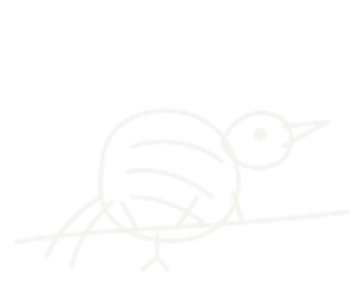
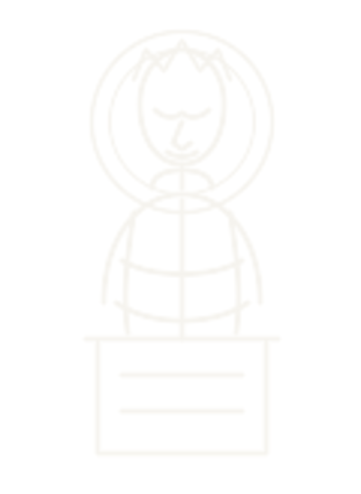

絮 · XÙ
FILE 00 — RELIC / RITUAL
01 / ∞
[ 絮 — ]
絮＊
Xù · fragments that never land
选择一个片段
SELECT A TRACE
有些对话，会改变形状。
Some conversations change their shape.
Some conversations change their shape.

乌鸦 ↗Crow It only ever witnesses. [ 04* ]
神像 ↗Statue Things we have not said.祷念 · INVOCATION
請像雕刻藝術那樣褻瀆我……
用那顆湧動著
滾燙血液的心臟
……向我禱告吧……

— 絮 · fragment 00